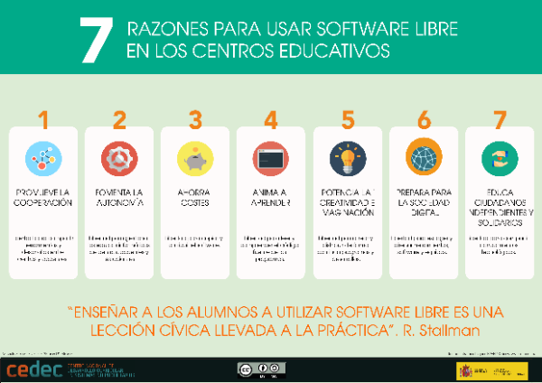

What is it?
The iDevice “Content Two” allows us to Introducing a content following the principles of Universal Learning Design (DUA)It works in all styles although the most appropriate is the DUA style, since it contains icons and colors to get the most out of this iDevice.
Examples of use
Support for main content
7 Reasons to Use Free Software in Educational Centers (Based on a Richard Stallman Text)
- Freedom to share tools and developments between centers and teachers.
- Freedom to manage computer teams of centers, teachers and students.
- Freedom to copy and distribute software.
- Freedom to read and understand the source code of the programs.
- It strengthens creativity and imagination. freedom to create and continuously distribute programs and developments.
- Freedom to choose and design tools, software and equipment.
- Education independent and solidarity citizens. freedom to share technological knowledge.
Audio
Visual support

Multiple blocks and buttons
We tell you what are the steps to follow to create a didactic sequence with eXeLearning:
Installation of eXeLearning
This is a free, open source tool, which is available in https://exelearning.net for the operating systems.
Create the structure
eXe allows you to create a navigable menu for Organize the contents on pagesThis menu has a hierarchical structure that we can organize according to our needs, with the nodes and subnodes we need. The menu will be available when exported as a website or when posting your content on a LMS like Moodle.
Adding the content
We can insert all kinds of materials, using the content blocks or “iDevices”. From the text editor we can include and format texts, add images, upload videos or audio, and embedded content created with other tools. Finally, we can choose the style of among the available, or create one personalized. Organization In terms of content, we bet on:
- Start with one Activity of motivation, reflection or mobilization of previous knowledgepreparation for subsequent tasks.
- Presenting the tasks to make with the corresponding explanation, facilitating, where appropriate, Links to documents or to websites for search for information or consultation, TIC tools necessary for the performance of the tasks (with link to a manual or tutorial) and, fundamental, the Instrument of Evaluation This will also serve as a guide for the students.
- Added Activities of Reflection throughout the learning process, to work metacoginiation, better assimilate learning and enhance the competence of learning to learn.
Adding interactivity
We can enrich our sequence with Interactive activities Some of these activities leave trace in Moodle, so they can be used to qualify.
5.Save and publish
Once the sequence is finished, we can Save it in different formatsDepending on what we want to do with that material:
- Save the resource in local, in a pendrive or in an external storage, and send it to the student for their consultation.
- Published in Procommon To provide the students with the direct link.
- It is a Moodle LMS platform.
- Publish in other web spaces offered by educational institutions or other types
Do you have doubts?
For any doubts or suggestions regarding the tool, we can consult the eXe manual or the The Telegram Group.
How is it done?
When selecting the iDevice "DUA Content" from the list of iDivices, the following will be shown in our eXeLearning:

As in the iDevice Text, we can optionally add:
- A title, after saving the IDevice
- A icon to choose from the available for the selected style (we remember that the DUA style is the one that most icons offers for this context, and has specific icons with colors associated with the type of DUA content we want to introduce)
- A feedback section that will be deployed by clicking the button (the button text is also modified)
To include the content in this iDevice, in addition, we have many more possibilities:
- First, we will choose the type of content we will insert according to the classification that the DUA makes: Implementation, Understanding or Expression. In some styles (such as DUA) some content will be differentiated from others by the associated color.

- When incorporating the content, we can add as many blocks as we want. by default only one appears, but we may add more by clicking on the icon
 .
. - In each content block we are offered different possibilities:
- We must decide whether we want the content we enter to appear directly (in which case we will leave the field "Button Text") empty or whether we otherwise want the contents to appeare by clicking on a button. In this case, we will have to indicate the text of the button and, if we want, associate the button with one of the available characters.

. The button (CC by-SA) - In the content box we are presented 4 tabs in which we can add the same content in different formats to facilitate the understanding of the same by all users:
- Main content, where we will include our content (obligatory).
- Facilitated reading
- Audio
- Visual support
- We must decide whether we want the content we enter to appear directly (in which case we will leave the field "Button Text") empty or whether we otherwise want the contents to appeare by clicking on a button. In this case, we will have to indicate the text of the button and, if we want, associate the button with one of the available characters.